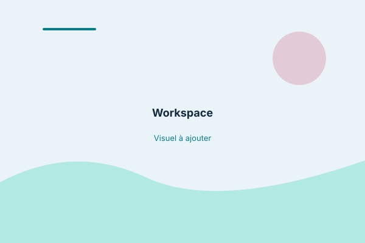

Language & localization
Translation, localization and linguistic quality, grounded in Canadian French and attention to context.
Profile & CV · A little about me
Language. Context. Technology.
I'm Stéphanie Nadeau, a bilingual linguist specializing in Canadian French, translation, localization and linguistic quality. Since 2013, I've worked across a wide range of industries and content types, combining linguistic precision with a strong interest in context, information structure and technology.
Language work shaped by context, information structure and technology.
01 / The person behind the practice
My work goes beyond words in isolation. I look at how language conveys meaning, how context shapes interpretation and how inconsistencies can reveal deeper problems in a text, a workflow or a digital system.
Across translation, revision, content evaluation and technical problem-solving, my goal is to make information more accurate, coherent and fit for its intended purpose.
02 / A connected perspective
My professional path spans language services, writing, document production, administration and applied technology. Rather than treating these fields as separate tracks, I draw on the connections between them: understanding a brief, organizing complex information, identifying inconsistencies and producing a result that works for its audience and context.
My language work has developed alongside an interest in the systems that support it—from terminology resources and computer-assisted translation tools to document processing, scripting and workflow automation. This combination helps me approach language projects with both editorial judgment and a practical understanding of the tools and processes around them.
Translation, localization and linguistic quality, grounded in Canadian French and attention to context.
Voice, tone, pacing and narrative structure shape how readers experience a text.
Terminology resources, computer-assisted translation tools, document processing, scripting and workflow automation.
Understanding a brief, organizing complex information, identifying inconsistencies and producing work for its audience and context.
One perspective, many connections
Writing is an important part of how I understand language. As a published author, I've worked with voice, tone, pacing and narrative structure—choices that shape not only what a text says, but how readers experience it.
That editorial sensitivity informs my language work. Whether I'm revising a sentence, adapting content for a new audience or checking consistency across a large body of material, I consider register, intent, readability and the integrity of the original message.
My author work has its own creative identity, but it shares a foundation with my professional practice: attention to language, audience and meaning.

I consider the purpose, audience, subject matter and delivery environment—not just the source text in isolation.
Terminology, style guides and documented criteria support consistency, while human review helps account for nuance and context.
I aim to identify issues clearly, apply appropriate criteria and make editorial decisions that can be understood and reproduced.
I explore tools and workflows when they can solve a real problem, reduce repetitive work or make information easier to manage.
Technical capabilities vary by tool and task; this list reflects complementary skills rather than an assertion of equal proficiency across every technology.
Provide translation, localization, editing, post-editing and linguistic quality services, primarily into Canadian French, for clients and language-service providers across technical, digital, commercial, institutional and editorial content.
Work with computer-assisted translation tools, translation memories, terminology resources, client-specific instructions and linguistic QA procedures to support accuracy and consistency.
Maintain a parallel practice in bookkeeping and administrative support, bringing a process-oriented perspective to records, documentation, structured information and operational workflows.
Published in Canada by Éditions de Mortagne and in France by Presses de la Cité. Author work contributes to a broader editorial perspective on voice, tone, narrative and audience.
École de la Riveraine | 2025–Present
TÉLUQ | 2024
TÉLUQ | 2023–2024
TÉLUQ
CFP Des Moulins | 2008–2009
My client and project history spans a broad range of sectors. The following groupings describe the industries represented in my wider client inventory.
Automotive, recreational vehicles, industrial equipment, electronics, aerospace, construction, chemicals, agriculture, mining, energy.
Pharmaceuticals, biotechnology, medical devices, diagnostics, healthcare services, accreditation, personal care.
Software, IT, digital platforms, cybersecurity, telecommunications, video games, audiovisual media.
Banking, payments, investment, insurance, accounting, audit, legal services, consulting, real estate.
Fashion, cosmetics, household products, food & beverage, sporting goods, pets.
Federal public administration, transportation, defence, procurement, standards, environmental communications.
Hotels, restaurants, logistics, freight, customs, document management, events.
Book publishing, literary content, advertising, PR, sports, entertainment, education.